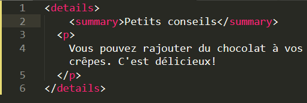
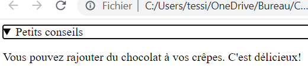

<summary>
| Description | Exemple | Résultat de l'exemple |
|---|---|---|
|
La balise <summary> représente une boîte permettant de révéler le contenu d'un résumé ou d'une légende pour le contenu d'un élément <details>. En cliquant sur l'élément <summary>, on passe de l'état affiché à l'état masqué (et l'inverse est possible aussi) de l'élément <details> parent. |
 |  |